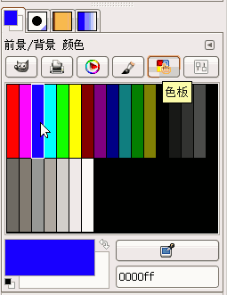
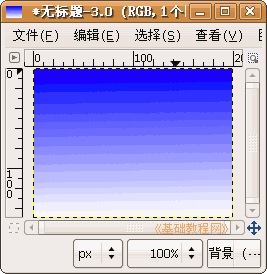
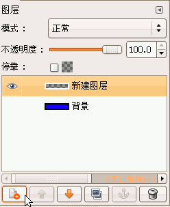
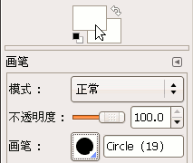
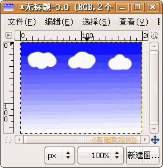

GIMP操作基础教程
作者：Teliute 来源：基础教程网
六、渐变工具 返回目录
渐变工具可以产生颜色的过渡变化，一般是从一种颜色到另一种颜色，因此至少需要两个不同的颜色，下面我们来看一个练习；
1、启动GIMP
1）点上面板栏的菜单“应用程序－图像－GIMP图片编辑器”，就可以启动GIMP程序；
2）程序启动完成后，出来两个长条面板，如果还有一个“日积月累”面板，可以去掉下面的勾，点“关闭”；

2、渐变工具
1）点菜单“文件－新建..”，新建一个宽度和高度都是300的空白文档，点“确定”打开一个空白文档窗口；
2）在工具箱面板中选择渐变工具，在油漆桶旁边的小方块图标，
3）把鼠标移到画布中，注意指针后面有一个小方块尾巴，从上面往下面拉出一条直线来，画布上出来渐变色；

4）在右边的“对话框”面板条中，点击图层面板左下角的“创建新图层”按钮，新增一个同样的图层；

5）选择画笔工具，把前景色改成白色，在选项里选择合适的大小，用画笔画几朵白云在蓝天上；
 
以“蓝天白云”为文件名，保存文件到自己的文件夹；
本节学习了GIMP中渐变工具的使用方法，如果你成功地完成了练习，请继续学习下一课内容；本教程由86团学校TeliuTe制作|著作权所有，商业用途请与作者联系
基础教程网：http://www.laxjyj.com/teliute/
美丽的校园……
转载和引用本站内容，请保留版权信息和本站链接。